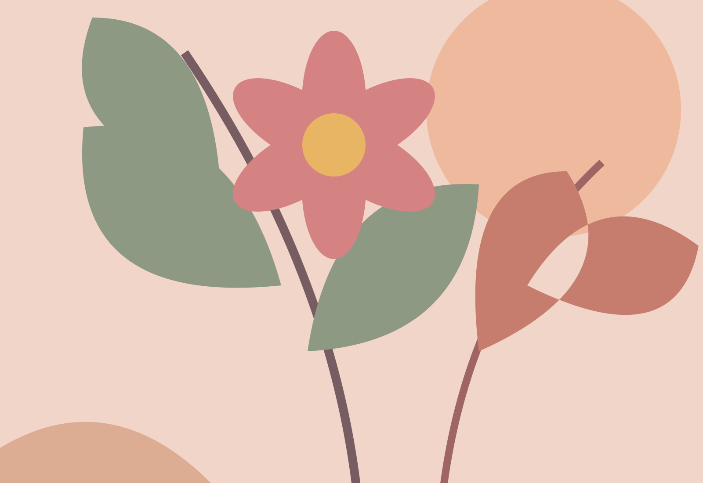

רגע של שקטהרים, אור ואוויר
רגע של שקטהרים, אור ואווירעוברים עם העכבר.
ורואים את כל התמונה.
הגדלה בתוך העמוד, עם בחירת מקור באיכות גבוהה כשהוא זמין.
רגעים ששווה לראות מקרובגלריה להדגמה
רגע של שקטהרים, אור ואוויר כשהעיר נרגעתיש הרבה מה לראות
כשהעיר נרגעתיש הרבה מה לראות
קצת צבע בעינייםהשראה מכל כיוון